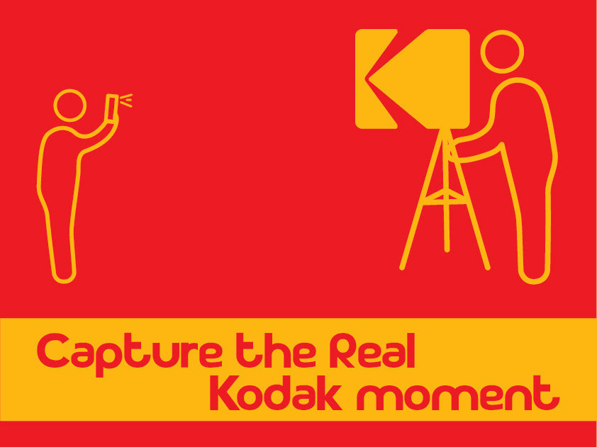
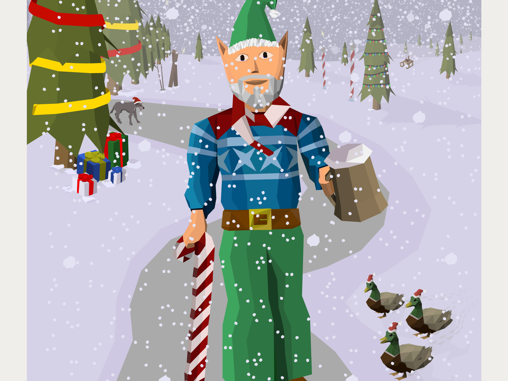
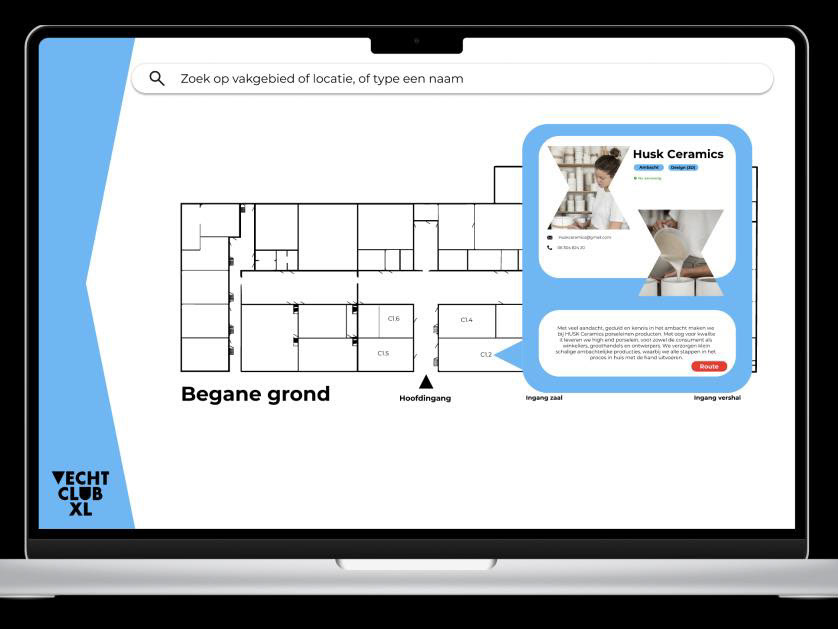

// 01. THE MAKER MANIFESTO
Welcome to my digital workshop and creative chaos!
Welcome to my (digital) chaos, glad you're taking a peek! I was born in Delft in '97 and I'm currently studying CMD (Communication and Multimedia Design) at Hogeschool Utrecht.
My background is deeply rooted in physical craftsmanship. Before transitioning into design and code, I worked extensively with my hands—woodworking, electrical installations, and horticulture. Today, I combine that tactile "makers-mindset" with digital innovation.
Whether I'm designing vector logos, setting up a custom Linux server, or craft-building a birch/falcata plywood wall unit inspired by Poul Cadovius with integrated smart home lighting and French cleats, I treat every project as an immersive experience.


Tactile Craft & Woodwork
Precision woodworking, custom shelving inspired by mid-century modular systems, floating furniture secured with French cleats, and hardware prototyping.
Community & Visuals
Managing vibrant gaming communities (150+ to 500+ members), organizing community events, and designing bespoke visual identities, posters, and apparel.
Autonomous Infrastructure
Maintaining a local Linux AI Homelab running autonomous agent pipelines that process workloads and assist in code generation and deployments.
The Immersive Mission & Hobbies
Most of all, I love creating immersive experiences. Whether building physical installations or decorating spaces, my goal is to give people a brand-new experience and take them completely out of reality for a moment. If I achieve that, my mission is 100% accomplished.
Outside of building and coding, you'll find me gaming with friends, listening to music, soaking up culture by traveling, and expanding my skill set. Think: screen-printing my own designs, creating posters, designing a ring with a goldsmith, or making party decorations!
// 02. THE WORKBENCH
Selected works ranging from physical woodwork and spatial design to game physics and digital media. Click any project to inspect full archives and photo sets.
Poul Cadovius Wall Unit & Floating Bench
2024 - Present — A custom modular mid-century inspired shelving system using Birch and Falcata plywood, featuring French Cleats and smart LED automation.
[ Open Project Archive → ]
Bomby Bird
2023–2024 — A retro educational game project. Designed with custom 2D/3D character models and flying bomb assets.
[ Open Project Archive → ]
De Grinch sloopt de kerstboom
2023 — Interactive physical tabletop game crafted within 1 week, with popsicle stick catapults and layered cardboard art.
[ Open Project Archive → ]
Generation Plastic Soup
2025 — Cooperative Game Jam card game exploring marine preservation and corporate generational conflicts.
[ Open Project Archive → ]
Grijpmachine (The claw machine)
2024 — Fully functional physical custom claw machine built to explore arcade ergonomics and hardware mechanics.
[ Open Project Archive → ]HU Begeleidt
2022 — Student-first digital platform concept built using Figma and user research to improve academic mentorship matchmaking.
[ Open Project Archive → ]
Kodak Heritage Campaign
2024 — Modern retro-branding campaign celebrating and reviving analog film photography layouts for Gen-Z.
[ Open Project Archive → ]
OSRS Kerstposter
2023 — Holiday vector illustration created for community engagement, blending RuneScape nostalgic themes.
[ Open Project Archive → ]
Picknicken met Sophie
2023 — Immersive sensory outdoor storytelling system with custom natural wood case, designed for tactile interaction.
[ Open Project Archive → ]
Samen Spelen
2024 — Co-operative wooden pulley installation designed to encourage motor coordination and teamwork among children.
[ Open Project Archive → ]
Vechtclub XL Space Design
2023 — High-contrast wooden scenography and customized spatial stage lighting to trigger interaction and creativity.
[ Open Project Archive → ]
Screen-printing & Posters
2024 — Hand-pulled silkscreen vector layouts experimenting with custom inks on heavy raw-grain organic papers.
[ Open Project Archive → ]// 03. AI CORE & LINUX HOMELAB
Deep inside my technical setup runs a dedicated Linux AI Homelab. This environment hosts experimental local LLMs and autonomous agents (including the agent that engineered and structured this website). It represents the intersection of my technical tinkering, automation passion, and digital design workflow.
[HOST]: casper-homelab-node01
[OS]: Ubuntu Server / Docker Swarm (Hardened)
[AGENT_DAEMON]: Active (Analyzing archives & rendering UI)
[UPTIME]: 99.9% Workshop Verified
// 04. COMMUNITY & EXTRA-CURRICULAR
Discord Gaming Communities
Managing vibrant gaming communities of 150+ to 500+ members. Organizing community events, game nights, and crafting custom visual identities and UI branding.
Analog Crafting & Design
Pushing creative boundaries beyond the screen — designing custom rings with a professional goldsmith, manual screen-printing apparel, and building immersive party props.
Cultural Exploration
Traveling to new cities, soaking up architecture, and gathering fresh inspiration for spatial design projects and interactive storytelling.
// 05. INITIALIZE TRANSMISSION
Have a question, a project proposal, or want to collaborate on an immersive installation? Drop a message below.
I hope to be in touch with you within two working days!